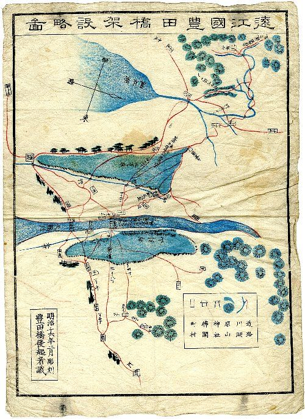
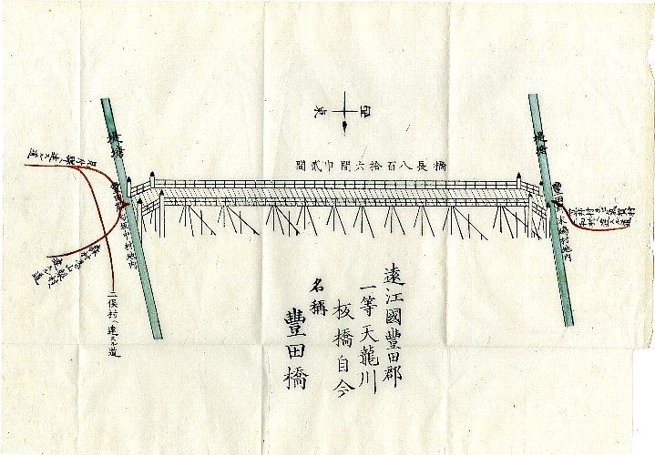

関連する佐口資料
この記事の内容に関連する佐口行正氏所蔵資料です。地名・商家・街道・祭礼・土地の記憶を、実際の資料からたどることができます。



※ 掲載資料はすべて佐口行正氏の所蔵であり、ご厚意・ご許可を得て公開しています。無断転載・二次利用を禁じます。
特集 ｜ 旧町村を歩く ／ 地名と土地の記憶
いまの磐田市には、見付・中泉を中心とした旧磐田市中心部とは別に、天竜川の流れがつくった「もう一つの土地の記憶」が重なっている。平成四年（一九九二）にまとめられた地名資料『ふるさと 豊田町地名地図』を手がかりに、旧豊田町 ── 現在の磐田市豊田地区 ── に残る地名・川・道・集落の履歴を、静かに読みほどいていく特集です。
磐田の歴史というと、多くの人はまず見付宿や遠江国府、中泉の天領を思い浮かべる。けれど現在の磐田市の地図を西へたどると、天竜川のすぐ手前に、それとはまた違う成り立ちを持つ一帯が広がっている。かつての豊田町、いまの磐田市豊田地区である。
このページは、その旧豊田町の地名を入口に、土地に積み重なった記憶を読みほどいていく特集の入口です。手がかりにするのは、平成四年（一九九二）三月に地元の人たちがまとめた一冊の地名資料 ── 『ふるさと 豊田町地名地図』。ここでは資料そのものを丸ごと写すのではなく、そこに記された地名の「読み」や「位置」「摘要」を尊重しながら、現在の地名・川・道との照合や追加調査を重ね、独自の読みものとして再構成していきます。
『ふるさと 豊田町地名地図』は、豊田町郷土を研究する会と豊田町教育委員会が平成四年（一九九二）三月三十一日に発行した「郷土研究資料 第十集」です。同会は昭和四十七年（一九七二）に発足し、それまでにも『ふるさと豊田』『天竜川池田の渡船』『ふるさとの石碑』『ふるさと池田』などをまとめてきました。この地名地図は、平成二年度からの二か年をかけ、江戸期の村絵図や水帳（検地帳）、明治初期の村地図、そして各地区に伝わる言い伝えを取材して、町内の古い小字（こあざ）や通称地名を一つひとつ拾い集めたものです。
資料の作りはきわめて実直で、地区ごとに「名称／よみがな／現在地／摘要」という形で地名が並んでいます。たとえば摘要欄には、検地帳に出てくる年号や、用水の東西、東海道との位置関係といった、土地の手がかりが短く書き添えられている。観光案内ではなく、土地の台帳に近い資料 ── そう受け止めるのが正確だと思います。
※ 本資料は、当サイトで別に扱っている「佐口行正氏所蔵史料」とは関係がありません。所蔵・利用許可の関係が不明な部分があるため、ここでは資料の文章・表をそのまま引用せず、出典として明記したうえで参照しています。
そもそも「豊田町」とはどの範囲を指すのか。少し整理しておきます。資料上・公的記録から確認できる範囲では、現在の豊田地区は、明治期に成立した富岡村と井通（いどおり）村が昭和三十年（一九五五）三月に合併して豊田村となり、同年四月に池田地区や旧竜洋町側の一部（赤池・上本郷・下本郷など）を加えて形づくられた、とされています。その後、昭和四十八年（一九七三）に町制をしいて豊田町となり、平成十七年（二〇〇五）四月、磐田市・竜洋町・福田町・豊岡村とともに合併して、現在の磐田市の一部になりました。
地形から見ると、この一帯は大きく二つの顔を持っています。北側には水はけのよい台地が広がり、富丘・東原・高見といった「丘」「原」「山」のつく地名が並ぶ。いっぽう天竜川に近い南側は、川がたびたび流れを変えてきた低地で、宮之一色・中田・西之島・下万能・笹原島のように、川と新田と集落がせめぎ合ってきた土地が連なります。資料の地名を地区順に眺めていくと、この「台地」と「低地」の対比が、地名そのものに刻まれていることに気づかされます。
見付や中泉が「街道と国府のまち」だとすれば、豊田は「川と田のまち」である。同じ磐田市のなかに、成り立ちの異なる土地の記憶が、静かに重なっている。
古い地名は、その土地が長いあいだ何に使われ、どんな地形だったかを伝える「小さな証言」です。断定はできませんが、地名の性格から、土地の履歴を推し量ることはできます。この特集では、旧豊田町の地名を主に次の四つの視点から読んでいきます。
天竜川の旧流路、堤・川原・新田。「堤外（ていがい）」「川原」「新田」のつく地名は、かつて川とどう向き合ってきたかを今に伝えています。
寺谷用水・高木用水など、低地を田に変えた用水の記憶。摘要欄の「用水西／東」は、水の流れが土地を分けていた名残と読めます。
旧東海道とその周辺。「一里山（一里塚）」「馬捨場」「往還」といった地名は、人と荷が行き交った街道の道筋を指し示します。
「○○屋敷」「寺前」「観音堂」「天王」など、人が住み、祈った場所の名。土地の所有や信仰の歴史が、地名の形で残されています。
旧豊田町の地名は数百を数えますが、ここではそのすべてを並べるのではなく、土地の記憶を読み解く入口になりそうな地域をいくつか挙げておきます。それぞれの読みは資料に拠っています（読みに確証のないものは扱っていません）。
北の台地のふもとにある加茂（古くは「賀茂」とも書かれた）は、土地の記憶という点で、とりわけ語るべきものを持っています。資料の加茂地区の摘要には「寺谷用水西」「寺谷用水東」という言葉が見え、地名が用水の流れによって分けられていたことがうかがえます。寺谷用水は、天正十八年（一五九〇）に天竜川左岸へ引かれた延長十二キロにおよぶ用水で、令和四年（二〇二二）には世界かんがい施設遺産に登録されました。その普請奉行をつとめたと伝えられる平野重定は、当時この加茂に住んでいたとされています。地名のなかに、土地を田に変えた人の記憶が静かに残っているのです。
天竜川に近い宮之一色には、「一里山（いちりやま）」のように摘要で「一里塚」と注された地名や、「馬捨場（うますてば）」「おくせど」といった、旧東海道沿いらしい地名が並びます。資料の発刊のことばにも、東海道から分かれて天竜川の舟着場へ向かった「市場道」「市海道（いちかいどう）」のことが記されており、見付宿から池田の渡しへと続いた道の記憶が、この一帯の地名に折りたたまれていることがわかります。
天竜川の渡し場として知られた池田の周辺は、平安末から中世にかけて池田荘（いけだのしょう）と呼ばれた荘園の地でもありました。池田荘は仁安年間（十二世紀後半）に立てられ、京都の松尾大社の所領であったと伝わります。資料では、小立野・西之島の地内に「葛巻（くずまき）」という地名が確認され、摘要に「池田荘・松尾大社の古文書」と書き添えられています。地名が、八百年前の荘園の記憶と細い糸でつながっている ── そう考えると、足もとの土地の見え方が少し変わってきます。
※ ここに挙げた由来や結びつきは、資料の摘要と公的資料・郷土史から「読み取れる範囲」のものです。地名の由来そのものを断定するものではなく、確かなことと、解釈・推測とは分けて扱っています。詳しい由来は、今後の調査を要する部分も少なくありません。
今回、準備中として置いていたテーマを独立記事にしたことで、旧豊田町の地名は、単に「珍しい名前を集める」段階から、土地の層を読み分ける段階へ進めることができた。池田荘と葛巻は中世荘園の記憶、堤外と内郷堤は治水の記憶、島のつく地名は低地の微高地の記憶、半場名は新田開発と人の名、挑燈野は古戦場伝承、森下・森本・立野は森と野の土地利用、富丘・東原は台地の開発をそれぞれ扱う。
同じ旧豊田町でも、天竜川に近い低地と、北側の台地では、地名が伝える内容が大きく違う。低地では、川、堤、島、新田の名が目立つ。台地では、丘、原、山、久保、森の名が増える。地名は、地域を一枚の平面としてではなく、川・堤・田・森・野・道が重なる立体として見るための手がかりである。
今後この特集では、各ページで扱った小地名について、古地図、地形分類図、現地確認、地域の聞き取りを重ねていく。由来を断定できないものは断定せず、しかし記憶として残す価値のある名は、失われる前に記録しておく。『豊田町地名地図』は、そのための出発点であり、ここから現在の磐田市豊田地区を歩き直すための案内図でもある。
FEATURE ARTICLES
『豊田町地名地図』を出発点に、地名から土地の記憶を読み解く記事です。資料の丸写しではなく、追加調査を重ねた独自の読みものとして綴っています。
UPCOMING ｜ 今後の記事予定
『豊田町地名地図』から派生して、今後この特集に加えていきたいテーマです。順次、独立した記事として綴っていきます。
各地区にくり返し現れる「堤外」の地名から、川と堤の境を読む。
読む → 低地と微高地川中の島のような微高地に開けた集落の記憶をたどる。
読む → 新田開発新田を開いた人の名が残る小字から、開発の歴史を読む。
読む → 古戦場伝承徳川・武田の古戦場跡と伝わる地名を、一言坂の戦いとあわせて読む。
読む → 森と野寺跡や「枇杷首」など、台地の縁に残る古い地名をたどる。
読む → 台地の土地利用北の台地に並ぶ「原」「久保」「山」の地名から、土地利用を読む。
読む →相続した土地や実家、長く住んだ家を見直すとき、その土地がどんな場所だったのかを知っておくと、判断の手がかりになることがあります。古い地名は、その小さな入口のひとつです。
旧豊田町・豊田地区の土地や空き家のことで気になることがあれば、地域の記憶もふくめて、実家じまい・空き家相談室や相続はじめ・空き家相談室で、肩ひじ張らずにご相談いただけます。
※ 本ページは個人による調査・覚え書きをもとにした読みものです。地名の読み・由来・位置関係には、なお確認を要する部分があります。資料の文章・表は転載せず、出典として参照しています。お気づきの点があれば、ご指摘いただけますと幸いです。
この記事の内容に関連する佐口行正氏所蔵資料です。地名・商家・街道・祭礼・土地の記憶を、実際の資料からたどることができます。


※ 掲載資料はすべて佐口行正氏の所蔵であり、ご厚意・ご許可を得て公開しています。無断転載・二次利用を禁じます。